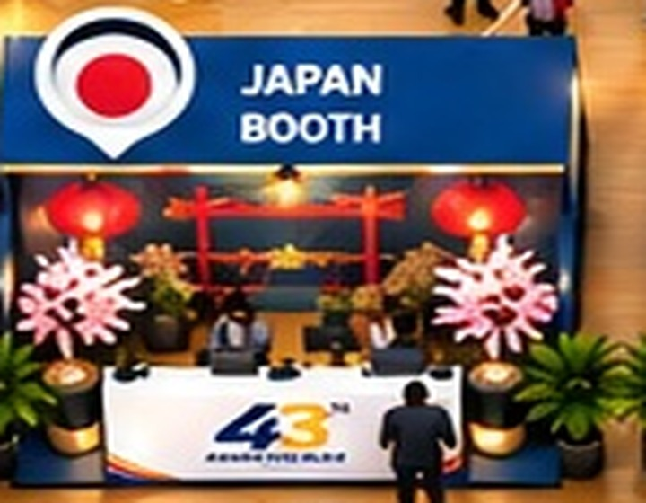
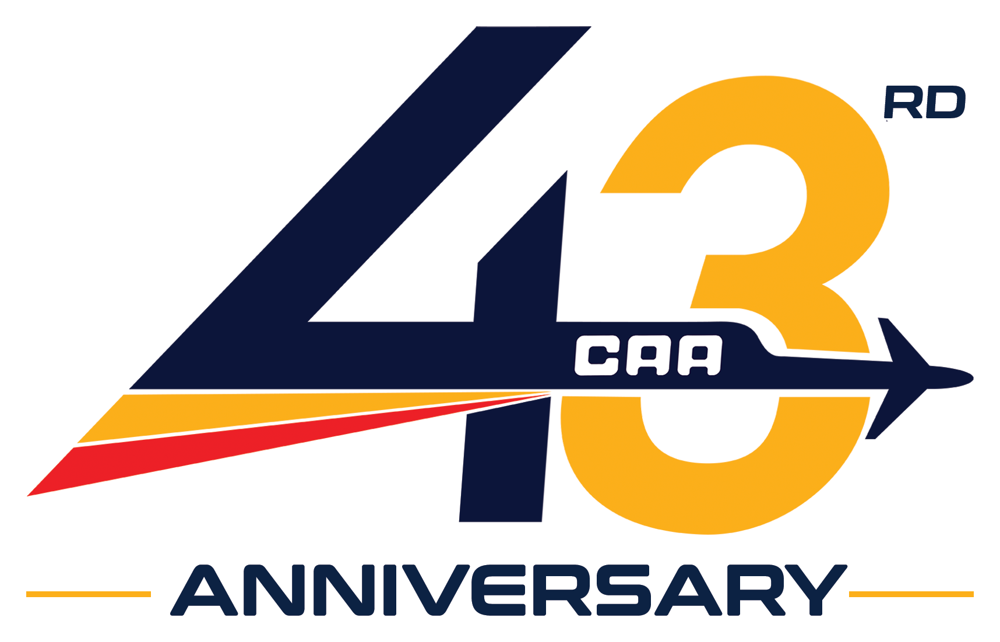
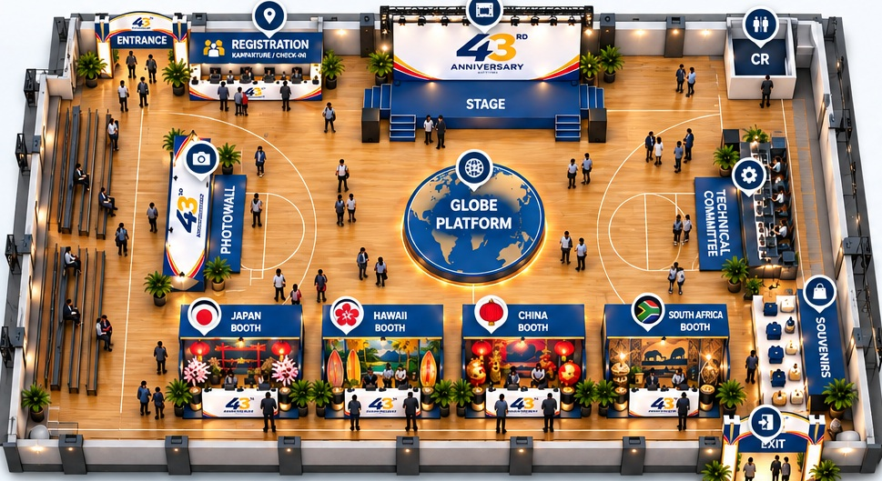
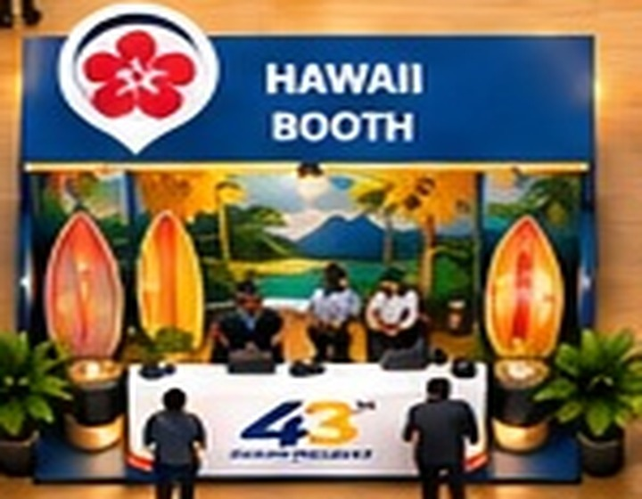

01Destination
Japan
Purok 1 & 6The Church reached Japan during its expansion across Asia, establishing a lasting presence in the country.

Welcome aboard
Explore the venue, find every destination, and enjoy the celebration.

Passport destinations
Visit each cultural booth, take part in the activities, and collect every passport stamp.

01Destination
The Church reached Japan during its expansion across Asia, establishing a lasting presence in the country.

02Destination
On July 27, the first Iglesia Ni Cristo worship service outside the Philippines was held in Ewa Beach.
Destination
The Church reached China through Hong Kong; Kowloon’s roots include a committee prayer held on January 1.
Destination
An early group worship service laid the foundation for the Church’s continuing growth across Africa.
Historical milestones are drawn from official Iglesia Ni Cristo and INC Media records.
Flight itinerary
A clear journey from arrival to egress. Check final event-day advisories for exact call times.
Committee setup, booth readiness, technical checks, and final venue inspection.
Complete your boarding pass, submit your raffle stub, and claim your event passport.
Anniversary program, booth visits, cultural activities, and community celebration.
Orderly exit, booth breakdown, area clearing, and committee turnover.
Before you board
Help keep the celebration safe, smooth, and welcoming for everyone.
Proceed to Registration upon arrival and keep your event passport with you.
Use the central aisle and marked pathways. Keep entrances, exits, and service areas clear.
Respect booth queues, follow activity instructions, and collect stamps responsibly.
Dispose of waste properly and follow committee instructions during egress.
Traveler assistance
Enter through the main Entrance, then proceed directly to Registration to receive your passport and instructions.
Select the booth from the map list or tap its numbered hotspot. The map will highlight the location and show its assignment.
Visit Registration for general assistance or the Technical Committee desk for program and equipment concerns.
Yes. On mobile, the map stays touch-friendly and area information opens as a bottom sheet for quick reference.